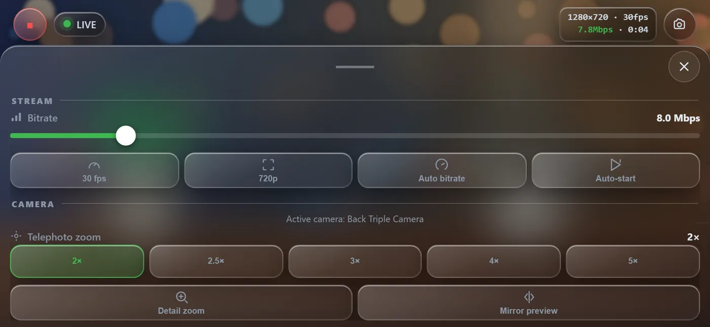
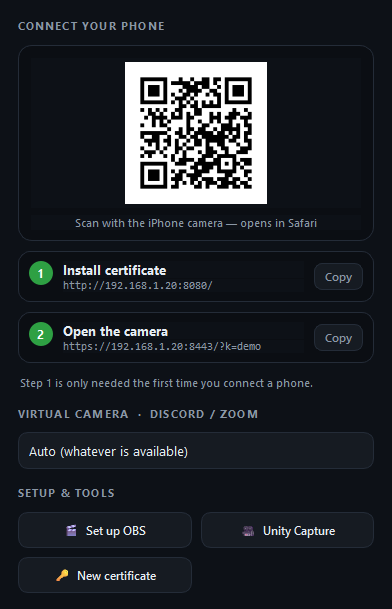

The pictures on this page are Focal's real phone page and PC window, showing a made-up demo picture instead of a camera.
How it works
- 1
iPhone
Safari opens Focal's camera page and sends the video with WebRTC, the same technology video calls use in the browser.
- 2
Focal on your PC
Shows the live picture, decoded by a built-in browser engine so it stays smooth. The video goes straight from the phone to the PC on your network.
- 3
Your calls (optional)
A virtual camera lets Discord, Zoom, Teams or OBS pick the phone like any webcam: Unity Capture, with no OBS needed, or the OBS Virtual Camera.
On the phone
- Lenses and zoom. 0.5×, 1×, 2× and Front buttons, a zoom slider up to 8×, or pinch. Zooming switches to the right lens, like the Camera app. Double-tap flips front and back; hold to mirror the preview.
- Quality you choose. 480p, 720p or 1080p; 24, 30 or 60 fps; 2 to 40 Mbps, or Auto bitrate. 60 fps works on the main camera at 720p.
- Detail zoom. Optional: captures at the sensor's full size and crops from that, for a sharper zoom (costs more battery).
- Picture and framing. Brightness, contrast, saturation and warmth, sent with the video. 180° rotate, a framing grid and a level.
- While streaming. Live size, frame rate, bitrate and time on screen, a snapshot button, and a moon button that blacks out the screen to save battery while the stream keeps going.
- Stays on. Keeps the screen awake, and reconnects by itself when you come back from another app. Add it to the Home Screen and it opens full screen.

On the PC
- The picture fills the window, with status for the server, the phone and the webcam, and a Stop button on top. F11 goes full screen.
- Settings (the gear, or Ctrl+,) holds the QR code, the two addresses with Copy buttons, the virtual camera choice (Auto, Unity Capture or OBS Virtual Camera) and the setup tools.
- Light on the phone. Minimizing the window pauses its preview, so the phone stops sending that copy of the video.

Set up
About five minutes, once. Phone and PC must be on the same network.
- Download
Focal-SingleFile.exeand run it. The first start unpacks it to%LOCALAPPDATA%\Focal(about 20 seconds); after that it starts at once. Prefer a folder? Unzip the portable zip anywhere and runFocal.exe. - When Windows Firewall asks, allow Focal on Private networks.
- On the iPhone, trust Focal's certificate. Safari only gives a page the camera over a trusted HTTPS connection, and on your own network that means a certificate your PC makes for itself.
- In Safari, open the Install certificate address from Focal's Settings (it looks like
http://192.168.x.x:8080/) and download the profile. - Settings › Profile Downloaded › Install.
- Settings › General › About › Certificate Trust Settings, and turn on PhoneCam Local CA.
- In Safari, open the Install certificate address from Focal's Settings (it looks like
- Scan the QR code in Focal's Settings with the iPhone camera, press Start and allow the camera. The picture appears on the PC.
Windows SmartScreen may warn because Focal isn't signed: More info › Run anyway. The certificate is still called PhoneCam, Focal's old name, so phones set up before the rename keep working.
Use it in Discord, Zoom or Teams
Watching the picture in Focal's window needs nothing more. To use the phone as a webcam in a call, add a virtual camera once:
Unity Capture · no OBS
In Focal's Settings, press Unity Capture. It downloads Unity Capture and registers it, asking for administrator rights once. Then pick Unity Video Capture as the camera in your call.
OBS
In OBS Studio, turn on Tools › WebSocket Server Settings › Enable once. With OBS open, press Set up OBS in Focal (it asks for the WebSocket password if there is one): it adds the phone as a source and starts the OBS Virtual Camera. Pick OBS Virtual Camera in your call.
Focal sends video only. Keep using your usual microphone.
Stays at home
- No cloud. The video goes from your phone to your PC over your own network. No account, no relay server, no telemetry. Like any WebRTC app, the phone asks a public STUN server (Google's) for its network address; the picture itself never goes there.
- A key in the QR code. Other devices on your Wi-Fi can't take over or watch the camera without it, and Focal turns away relay connections that come from other websites.
- Your certificate stays yours. It's made on your PC on the first start, and its private key never leaves it.
Good to know
- Windows 10 or 11On the PC.
- iPhone with SafariWhat Focal is made and tested for.
- Same networkPhone and PC on the same Wi‑Fi or LAN.
- Video onlyNo sound: keep your usual microphone.
- About 230 MBIt brings its own Python and a browser engine for the preview.
- Free and open sourceMIT license, source on GitHub.